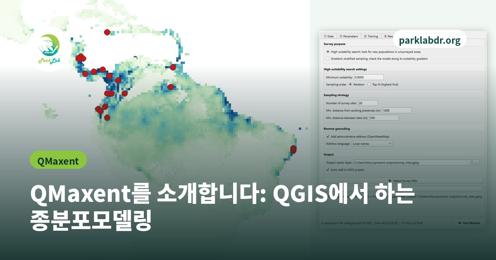

QMaxent를 소개합니다: QGIS에서 하는 종분포모델링
종의 서식적합도 지도를 단계별로 만들고, 현장에서 어디를 조사할지 고르는 무료 QGIS 플러그인

몇 곳에서만 관찰된 종이 실제로는 어디에 살 수 있을까요? 종분포모델은 출현 기록과 기후, 토지피복 같은 환경 자료를 함께 분석해 이 질문에 답합니다. Maxent는 이를 위해 세계적으로 가장 많이 쓰이는 방법 가운데 하나입니다.
QMaxent는 이 과정을 코딩 없이 QGIS 안에서 할 수 있게 해 줍니다. 무료 오픈소스 소프트웨어로, 보호지역 담당자, 학생, 연구자를 위해 만들었습니다.
QMaxent로 할 수 있는 일:
- 출현 지점(예: GBIF 자료)과 환경 레이어를 불러오고, 레이어들의 격자가 맞는지 점검
- Maxent 모델 학습과 공간 교차검증 평가
- 반응 곡선과 변수 중요도 확인
- 서식적합도 지도 작성
- 주소까지 포함한 현장 조사지점 선정
현재 버전은 0.2.0입니다. QGIS의 플러그인 메뉴에서 플러그인 관리자를 열고 QMaxent를 검색해 설치하면 됩니다. 매뉴얼은 실제 QGIS 화면으로 모든 단계를 보여 주며(영문, 국문), 연습용 예제 데이터도 있습니다.